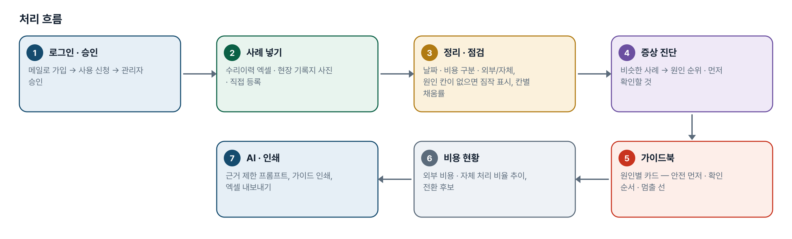
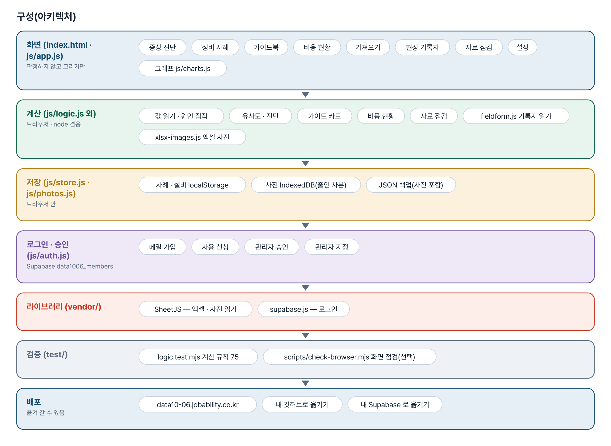
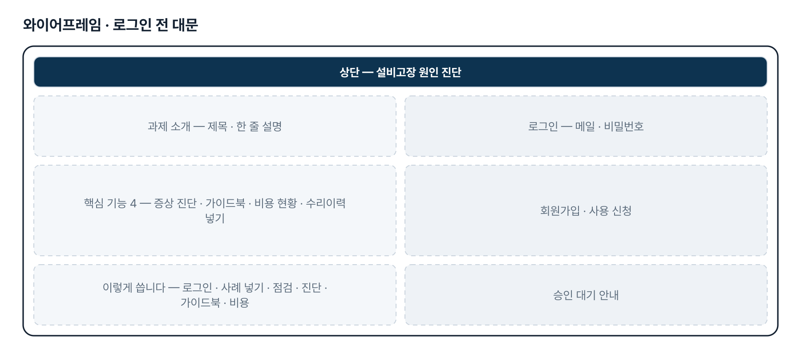
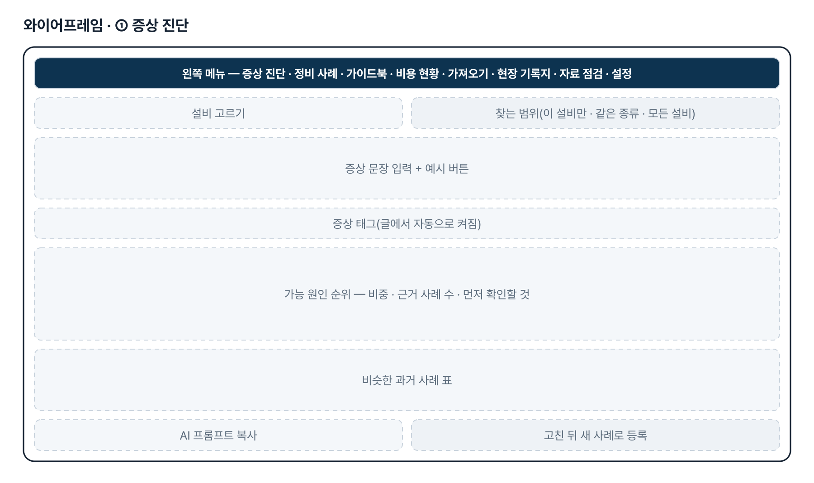
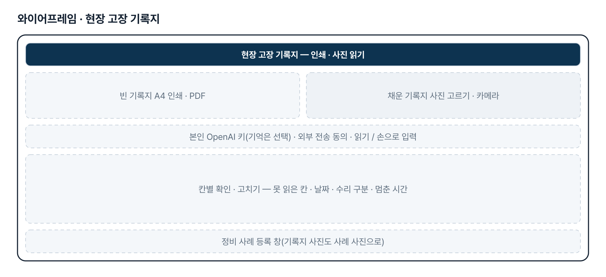
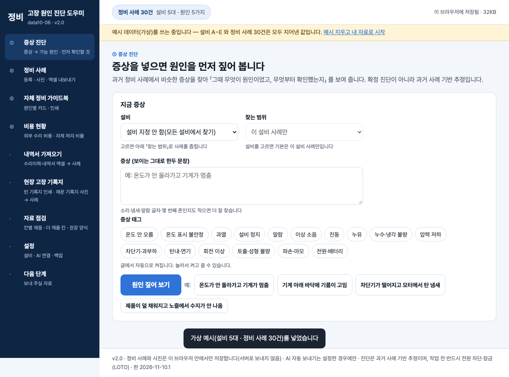

기획서 내려받기
파이프라인 · 아키텍처 · 와이어프레임 · 개발일지가 들어간 워드 문서입니다. 버전마다 따로 남깁니다.
| 버전 | 날짜 | 바뀐 점 | 파일 |
|---|---|---|---|
| v2.0 | 2026-11-10 | 최종 기획서 — 파이프라인 · 아키텍처 · 와이어프레임 정리 / 로그인 · 사용 신청 · 관리자 승인(요청자 Supabase 로 옮길 수 있게) / 로그인 전 대문 | 워드 내려받기 |
요구사항과 구현
| 기획서 요구 | 구현 |
|---|---|
| 고장 원인 진단 챗봇 — 증상을 넣으면 원인을 먼저 짚어 줌 | 한국어 글자 2개 묶음 유사도 + 증상 태그 + 같은 설비로 비슷한 사례를 찾아 원인 순위 · 근거 사례 수 · 먼저 확인할 것, AI 프롬프트(복사 · 선택 자동 보내기) |
| 「우선 센서 연결부터 확인」처럼 첫 확인을 안내 | 사례의 안전 단계를 뺀 첫 조치 단계를 「먼저 확인할 것」으로, 예시가 그대로 나오는지 테스트로 묶음 |
| 초보자용 자체 정비 가이드북 | 원인별 카드 자동 초안 — 안전 먼저 · 확인 순서 · 「초보자는 여기까지」 선 · 공구 · 부품 · 전문가를 부를 때, 고치기 · 인쇄 |
| 정비 내역서 · 영수증 활용 | 수리이력 엑셀 그대로 가져오기(여러 시트 · 병합 셀 · 열 맞추기 · 원인 짐작 · 비용 미기재/무상/견적 구분) |
| 고장 사진 · 동영상 활용 | 사례별 사진(줄인 사본), 엑셀 칸 위에 붙인 사진을 그 줄의 사례로. 동영상은 위치만 |
| 외부 수리 비용 줄이기 | 외부 비용 · 건수 · 자체 처리 비율, 월별 · 설비별 · 원인별, 자체 처리 전환 후보 |
| 현장 기록지(4차 양식) | 빈 기록지 A4 인쇄, 채운 기록지 사진 → 본인 OpenAI 키로 읽기 → 칸별 확인 → 사례 등록 |
| 매뉴얼 근거 질의 · 팀 공유 | 2단계 — 지금은 매뉴얼 메모 발췌를 프롬프트에 넣고, 자료는 브라우저별 저장 + JSON 백업 |
그림으로 보기






개발일지
2026-11-10 · 최종 기획서 · 로그인
- 로그인 · 사용 신청 · 관리자 승인 키트 적용(data1006_members)
- 로그인 전 대문 문구를 기획서에서 만듦
- 최종 기획서(워드 · plan.html) · README 정리
- 로직 테스트 75개 통과
2026-11-08 · 4차 — 권장 양식 점검 · 현장 기록지
- 권장 양식 정리본 49건 · 사진 58장 읽기 점검, 결함 4가지 고침
- 현장 고장 기록지 화면(js/fieldform.js) — A4 인쇄, 사진 → 본인 키로 읽기 → 확인 → 사례
- 테스트 66 → 75개
2026-10-27 · 3차 — 수정본 · 엑셀 사진 · 찾는 범위
- 수리이력 수정본(47건 · 사진 41장) 그대로 읽기, js/xlsx-images.js
- 「>」 조치 순서 · 0원 · 미기재 구분, 수정본으로 바꾸기
- 진단 「찾는 범위」 — 설비를 고르면 이 설비 사례만
- 테스트 66개
2026-10-21 · 2차 — 실제 수리이력
- 수리이력 60건 그대로 읽기, 원인 짐작 · 비용 구분 · 처리 상태
- 자료 점검 화면, 권장 양식
- 테스트 55개
2026-10-20 · 1단계
- 가상 사례 30건으로 증상 진단 · 정비 사례 · 가이드북 · 비용 현황
- 사진 줄여 저장(IndexedDB), AI 프롬프트
- 테스트 37개